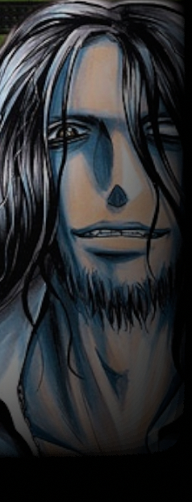

近年、中層にて勢力を伸ばしてきた商業組合。
イメージワードは【悪意】。
ルーン企業連や闇商会スヴァルトアルフと比べると規模は非常に小さく、特定の本拠地も持っていない。
メンバーにも表立って店を構える者はほぼおらず、露天商や行商といった神出鬼没の体裁を取っており、
中にはまともな商売をしている影で、クリフォトとして活動しているメンバーも。
メンバーの共通項は２つのみ。
「クリフォトの設立者である【マジナリー】と接触している事」と「悪意を以て活動している事」。
「自由」も、「利権」も、行き着けば「利益」すら求めていない。彼らはただ、「悪意」を撒き散らしている。
日用品から武器兵器、毒薬から犯罪計画まで、彼らの扱う「商品」は多岐に渡る。
セールストークという名の犯罪教唆によって悪へ堕ちた客も少なくない。
【マジナリー】に心酔している狂信者、なんだかんだで利益を求める強欲商人、ただ世界を荒らしたいだけの愉快犯、
動機は様々だが行動原理は１つ。「悪意」である。
厳密に言えば彼らは組織ではない。ただ【マジナリー】と出会い、その思想を知り、行動しようと思った者達の総称である。
それ故にメンバー同士の繋がりなど全く無く、時にはその悪意によりメンバー同士で殺し合う。
当然ながらオルレアンはおろかチーム世紀末覇者にも警戒されており、他層の組織にも危険視されている。
秩序を破り、混沌を濁らせ、自由を祓い、束縛を裂き、経済を穢し、社会を壊し、世界を染める。
世界の全てにとって忌々しいこの組織は、たった１人の人間の自分勝手な考えから始まった。
|
 |
マジナリー
【クリフォト】創設者。
ジャマー能力や因子暴走等のあらゆる手段を用いてもそれを解決出来なかった彼は、原因を
見る者によってその姿を変え、学生服の少年から髭を生やした黒髪の男、
能力は【 虚数定義 - ジ・イマジナリー - 】。 |